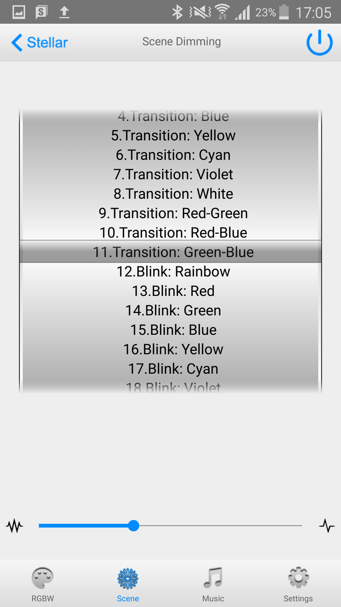
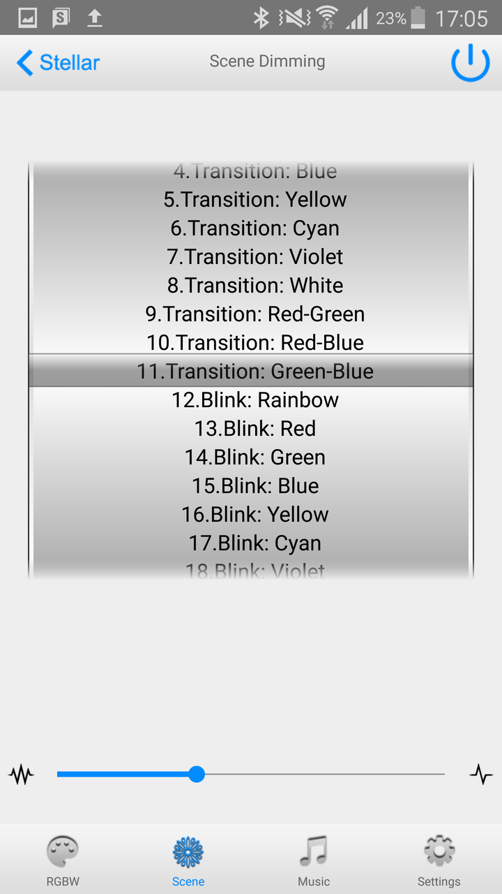
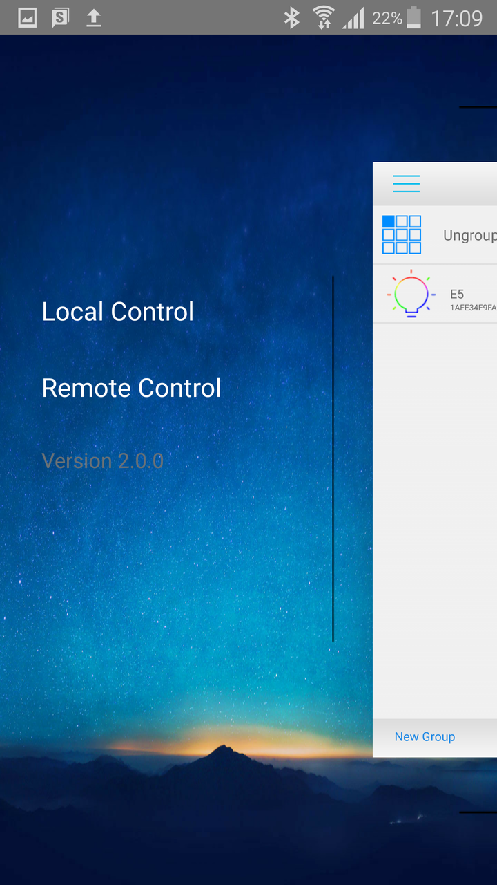
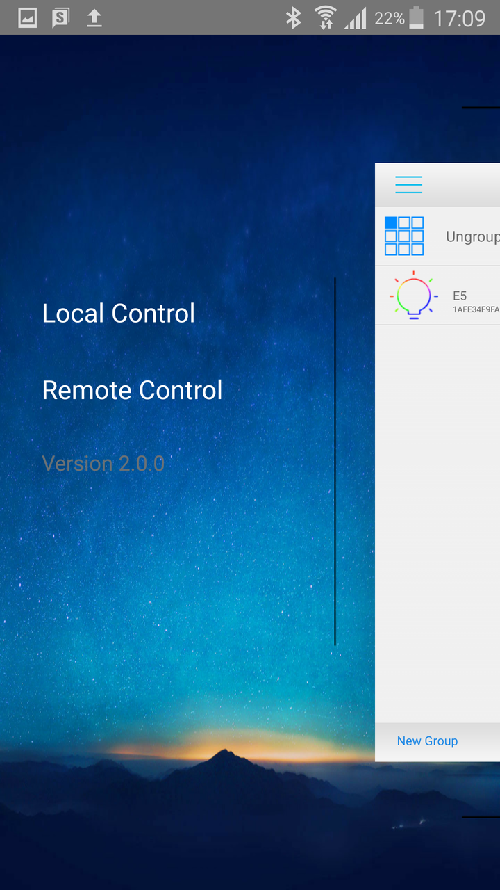

Stellar Wi-Fi Quick Start Guide

Introduction
The Stellar Wi-Fi app allows you to control your Sansi smart bulb by switching on/off, adjusting brightness gradually or choosing your favorite color amongst millions of colors all with your smartphone. The lamp has 20 built-in preset scenes. You can also use the microphone ( iOS only) or the songs in your library to interact with the bulb.
Get the App
iOS users may search for "Stellar Wi-Fi" in the App Store or scan the first QR code below.
Android users may search for "Stellar Wi-Fi" in the Google Play Store or scan the second QR code below.


Local Control
- Fix the LED bulb and turn on its power.
- Open the WLAN settings in the cell phone or tablet. Find the bulb's Wi-Fi network (name similar to SLRGBW*******), and connect.
- Open the Stellar Wi-Fi application. It searches the bulb automatically. The connected bulbs will be shown in the list (showing MAC addresses).
- Tap to enter the control interface for the bulb's color and brightness.
- Music Mode
Tap the button at the bottom and search your favorite music, and enjoy rhythm of the light with the music. - Microphone Mode (iOS only)
Tap the button at the bottom of screen, and control the light by voice. - Scene Mode
Tap the button at the bottom, and feel the different color and frequency configurations.


 

Connect Multiple Bulbs
To connect multiple bulbs, you need to include them into the same Wi-Fi network, such as the network you use at home.
- Repeat the following operations on bulbs you wish to connect:
- Connect the bulb. In control page, tap the Config button at the lower-right corner.
- This opens the LED bulb configuration page.you can change the bulb’s name;
- Input the name and password of the new wireless network, Tap Join.
- The bulb will restart and connect to the new network. You can now continue to add other bulbs.
- Join your phone into the new Wi-Fi network.
- Open the Stellar Wi-Fi application and let it search all the bulbs in the network.


Remote Control
- Make sure the bulb and the cell phone are connected to the network.
- Tap left side menu to switch the control interface.
- Select Remote Control and a Login Interface will display.
- Enter your email address and password to log in. For the first time, you need to register an account. Simply input an email address and password, then re-enter the password. Tap Register to create a new account.
- After successfully logging in, a list of remote lamps will be displayed.
- Switch to the local list and the editor page to set the bulb for remote control.
 



Restore Factory Settings
- Turn off the lamp and wait for 10 seconds.
- Repeat the following operation for 3 times.
- Turn on the lamp.
- When the lamp is on, turn it off immediately.
- Wait for 4 seconds.
- Turn on the lamp and wait for 30 seconds.
The bulb will now restore factory settings. It will change light according to: slow red -> slow green -> slow blue -> white and enters Wi-Fi access point mode.
System Requirements
Stellar Wi-fi runs on the following devices:
- iOS devices running iOS 8.0+
- Android devices running Android 4.2+
You also need at least one Sansi Smart LED bulb to get started.
Contact Us
For the latest news about smart LED bulb, please visit: http://www.sansitech.com
For technical support, please contact Stellar@sansitech.com